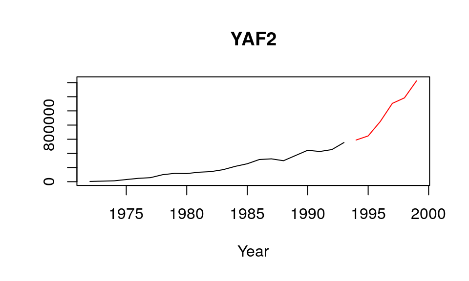
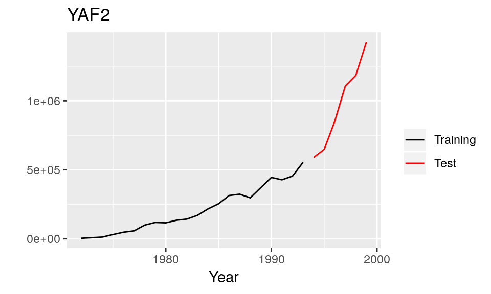
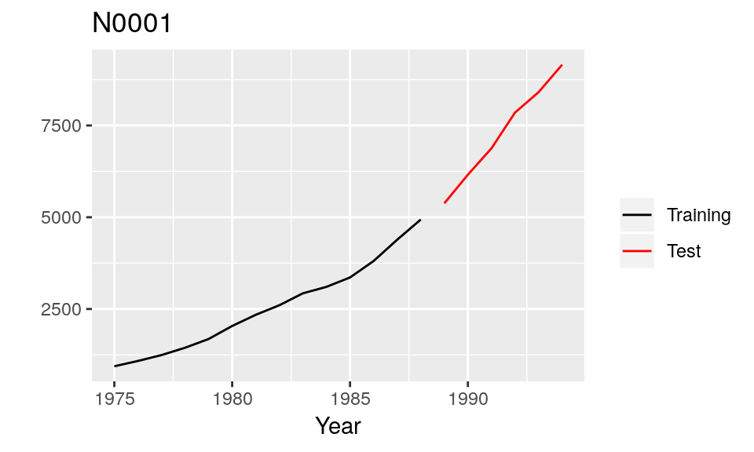

The R package Mcomp contains the 1001 time series from the M-competition (Makridakis et al. 1982), the 3003 time series from the IJF-M3 competition (Makridakis and Hibon, 2000), and the forecasts contributed to the IJF-M3 competition. See also the tscompdata package for data from other forecasting competitions.
The M1 forecasting competition was organized by Spyros Makridakis and Michèle Hibon, involving 1001 series. In this competition, anyone could submit forecasts, making this the first true forecasting competition as far as I am aware. They also used multiple forecast measures to determine the most accurate method.
The 1001 time series were taken from demography, industry and economics, and ranged in length between 9 and 132 observations. All the data were either non-seasonal (e.g., annual), quarterly or monthly. Curiously, all the data were positive, which made it possibly to compute mean absolute percentage errors, but was not really reflective of the population of real data.
The M1 competition data are stored as M1.
library(Mcomp)
#> Loading required package: forecast
M1
#> M-Competition data: 1001 time series
#>
#> Type of data
#> Period DEMOGR INDUST MACRO1 MACRO2 MICRO1 MICRO2 MICRO3 Total
#> MONTHLY 75 183 64 92 10 89 104 617
#> QUARTERLY 39 18 45 59 5 21 16 203
#> YEARLY 30 35 30 29 16 29 12 181
#> Total 144 236 139 180 31 139 132 1001Functions are provided to plot and manage the date. The plot.Mdata() and autoplot.Mdata() functions plot a time series, showing both the training and test sections of the series.


subset.Mcomp() returns a subset of the time series data; subsets can be for specific periods, or specific types of data or both.
subset(M1, "monthly")
#> M-Competition data: 617 MONTHLY time series
#>
#> Type of data
#> Period DEMOGR INDUST MACRO1 MACRO2 MICRO1 MICRO2 MICRO3
#> MONTHLY 75 183 64 92 10 89 104
subset(M1, "macro1")
#> M-Competition data: 139 MACRO1 time series
#>
#> Type of data
#> Period MACRO1
#> MONTHLY 64
#> QUARTERLY 45
#> YEARLY 30
subset(M1, "macro1", "monthly")
#> Type of data
#> Period MACRO1
#> MONTHLY 64The 111 series used in the extended comparisons in the 1982 M-competition can also be selected.
subset(M1, 111)
#> M-Competition data: 111 time series
#>
#> Type of data
#> Period DEMOGR INDUST MACRO1 MACRO2 MICRO1 MICRO2 MICRO3 Total
#> MONTHLY 8 21 8 9 1 10 11 68
#> QUARTERLY 5 2 5 6 0 3 2 23
#> YEARLY 3 4 4 3 2 3 1 20
#> Total 16 27 17 18 3 16 14 111M1 is of class Mcomp which is a list, where each element is also a list containing information about one time series. For example, the first element contains the following information.
str(M1[[1]])
#> List of 9
#> $ st : chr "Y1"
#> $ n : num 22
#> $ h : num 6
#> $ period : chr "YEARLY"
#> $ type : chr "MICRO1"
#> $ description: chr "FRANCE LA REGIE RENAULT A25 ANS(CHAMBRE DE COMMERCE FRANCAIS) TURNOVER-RENAULT"
#> $ x : Time-Series [1:22] from 1972 to 1993: 3600 7700 12300 30500 47390 ...
#> $ xx : Time-Series [1:6] from 1994 to 1999: 588568 646758 849998 1106740 1184550 ...
#> $ sn : chr "YAF2"
#> - attr(*, "class")= chr "Mdata"The various items are as follows:
st: the series number and period. For example Y1 denotes the first yearly series, Q20 denotes the 20th quarterly series, and so on;n: the number of observations in the training part of the time series;h: the number of required forecasts (equivalently the number of observations in the test part of the time series);period: interval of the time series. Possible values are YEARLY, QUARTERLY, MONTHLY & OTHER.type: the type of series. Possible values are DEMOGR, INDUST, MACRO1, MACRO2, MICRO1, MICRO2 & MICRO3.description: a short description of the time series;x: the training part of the time series of length n;xx: the test part of the time series of length h.sn: name of the series;In 1998, Makridakis & Hibon ran their M3 competition. Entrants had to forecast 3003 time series and the results were compared to a test set that was withheld from participants. The time series were all taken from business, demography, finance and economics, and ranging in length between 14 and 126 observations. Again, the data were all either non-seasonal (e.g., annual), quarterly or monthly, and all were positive.
The time series from the M3 forecasting competition and the forecasts from all the original participating methods are stored in M3 and M3Forecast respectively. plot.Mdata(), autoplot.Mdata() and subset.Mcomp() work on M3 as well. The structure of M3 is the same as for M1.
M3Forecast is a list of data.frames. Each list element is the result of one forecasting method. The data.frame then has the following structure. Each row is the forecast of one series; rows are named accordingly. Each column corresponds to a forecast horizon. There are 18 columns, as the maximum number of forecasts for any series is 18. If fewer forecasts than 18 exist, the row is padded with NA values.
M3
#> M-Competition data: 3003 time series
#>
#> Type of data
#> Period DEMOGRAPHIC FINANCE INDUSTRY MACRO MICRO OTHER Total
#> MONTHLY 111 145 334 312 474 52 1428
#> OTHER 0 29 0 0 4 141 174
#> QUARTERLY 57 76 83 336 204 0 756
#> YEARLY 245 58 102 83 146 11 645
#> Total 413 308 519 731 828 204 3003
autoplot(M3[[1]])